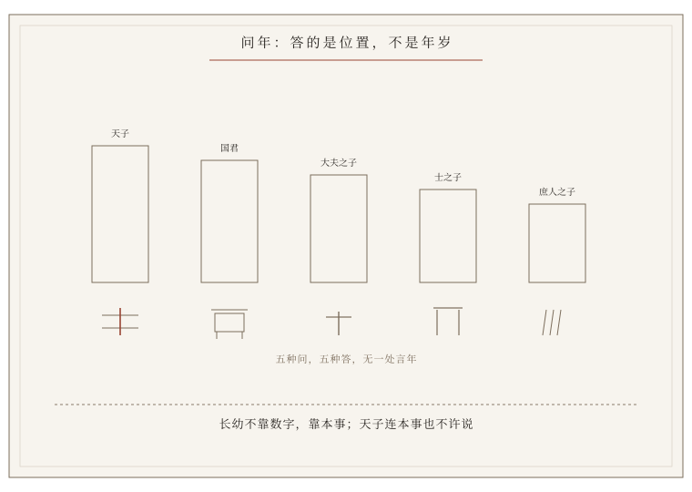

曲礼下 · 二·六十四 · 第 187 课
问天子之年，对曰「闻之，始服衣若干尺矣」；问国君之年，长曰能从宗庙社稷之事，幼曰未能；大夫之子，长曰能御，幼曰未能御；士之子，长曰能典谒，幼曰未能；庶人之子，长曰能负薪，幼曰未能负薪。注「皆言其能，则长幼可知」。
说什么事：五种问年，五种答法，全不言年。
落在哪一层：礼，兼及礼意。论以能代年。
为何编在此位：上节论比类，此节论问对。皆言之礼。
【经】問天子之年，對曰：「聞之，始服衣若干尺矣。」問國君之年，長，曰：「能從宗廟社稷之事矣。」幼，曰：「未能從宗廟社稷之事也。」問大夫之子，長，曰：「能御矣。」幼，曰：「未能御也。」問士之子，長，曰：「能典謁矣。」幼，曰：「未能典謁也。」問庶人之子，長，曰：「能負薪矣。」幼，曰：「未能負薪也。」
【注】既不敢言年，又不敢斥至尊所能。皆言其能，則長幼可知。御猶主也。《書》曰：「越乃御事。」謂主事者。謁，請也，謂能擯贊出入，以事請告也。《禮》：「四十強而仕，五十命為大夫。」
【疏】此谓幼少新立之王，或有远方异域人来，不知王年大小，问朝廷之臣。「对曰，闻之，始服衣若干尺矣」者，臣为答之，必有法则。《礼》「齿路马有诛」，而至尊体贵，故臣不可轻言君年及形长短与才技所堪，故依违而对也；但云「闻之」，谦不敢言见也；云「始服衣若干尺」，既不敢指斥，即云服衣若干尺，谓或五尺或六尺，随长短而言之，幼则衣短，长则衣长，问者闻之则知王长幼也。古者谓数为若干。「问国君之年」者，亦谓幼少新立为君，而他人问其臣也。「长曰能从宗庙社稷之事矣」，不言闻之及衣，而言所能主国者，辟天子也。人君十五有养子之礼，长则能主国，闻其能主国，则知十五以上；若闻未能主国，则知十四以下是幼也。「问大夫之子」者，亦他国人问此大夫之子长幼于大夫之臣也。天子诸侯继世象贤，其年不定，故问其年；而大夫五十乃爵，故不问大夫而问其子。「长曰能御矣」，御谓主事也，官有世功，子学父业。「问士之子」，士贱无臣，但以子自典告也。「问庶人之子」，庶人谓府史之属，亦有同僚或他国人问其同僚。熊氏云：「庶人年无长幼，亦问其子者，顺上大夫士而言之。」
若干 疏「古者谓数为若干」，「言事本不定，常如此求之」。
御 注「犹主也」。主事。
典谒 注「谒，请也，谓能摈赞出入，以事请告」。
负薪 庶人之子能事。疏引《少仪》「长则曰能耕」。
依违而对 不直答，绕答。
问天子的年纪，答说「听说他刚开始穿衣，衣长若干尺」。问国君的年纪，已长成的答「能主持宗庙社稷之事了」，年幼的答「还不能」。问大夫之子，答「能主事了」；问士之子，答「能典赞请谒了」；问庶人之子，答「能背柴了」；不能的都说「还未能」。
五问五答，没有一处给出年岁。礼把「几岁」换成「能做什么」——长幼不靠数字，靠本事。而天子一处最奇：连本事都不许说，只说衣服几尺。
第一层 不敢言年 疏「臣不可轻言君年及形长短与才技所堪，故依违而对」。天子之答最绕，因至尊之体，臣连他多高多能都不能说。
第二层 以衣代年 「始服衣若干尺」。幼则衣短，长则衣长。此答妙在不着一数，而问者自能推知。
第三层 以能代年 国君以「能主国」、大夫子以「能御」、士子以「能典谒」、庶人子以「能负薪」。四等四事，长幼自见。礼答问，答的是位置，不是年岁。
第四层 辟天子 疏「不言闻之及衣，而言所能主国者，辟天子也」。二级以下都可直言其能，唯天子不可。同一问题，越往上越不能答。
与今日何干 问一个孩子多大了，不如问他会做什么。此答法至今好用，且更近实。
| 左 | 右 |
|---|---|
| 问天子之年 | 闻之，始服衣若干尺 |
| 问国君之年 | 长则能从宗庙社稷之事 |
| 问大夫之子 | 长则能御，幼则未能御 |
| 问士之子 | 长则能典谒 |
| 问庶人之子 | 长则能负薪 |
| 皆言其能 | 则长幼可知 |
画五枚由高到低的立牌，牌面皆空白；每牌下方各系一件极简之物：第一牌下为一截衣襟（两道横线夹一道竖），第二牌下为一枚小鼎形（示宗庙），第三牌下为一道短竖加横（示主事），第四牌下为一枚小门形，第五牌下为一束柴。五牌五物等高对齐。不写文字、不画人。赭色只用在第一牌下那截衣襟。
